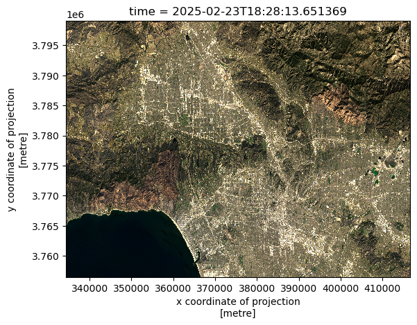
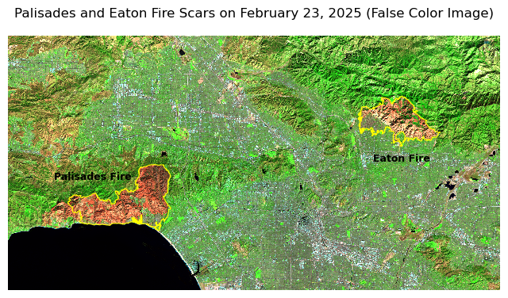

import os
import geopandas as gpd
import matplotlib.pyplot as plt
import xarray as xrpalisades = gpd.read_file(os.path.join('data', 'Palisades_Perimeter_20250121', 'Palisades_Perimeter_20250121.shp'))
eaton = gpd.read_file(os.path.join('data', 'Eaton_Perimeter_20250121', 'Eaton_Perimeter_20250121.shp'))aoi = xr.open_dataset(os.path.join('data','landsat8-2025-02-23-palisades-eaton.nc'))
aoi<xarray.Dataset> Size: 78MB
Dimensions: (y: 1418, x: 2742)
Coordinates:
* y (y) float64 11kB 3.799e+06 3.799e+06 ... 3.757e+06 3.757e+06
* x (x) float64 22kB 3.344e+05 3.344e+05 ... 4.166e+05 4.166e+05
time datetime64[ns] 8B ...
Data variables:
red (y, x) float32 16MB ...
green (y, x) float32 16MB ...
blue (y, x) float32 16MB ...
nir08 (y, x) float32 16MB ...
swir22 (y, x) float32 16MB ...
spatial_ref int64 8B ...aoi[['red','green','blue']].to_array().plot.imshow(robust=True)/Users/galaz-garcia/opt/anaconda3/envs/eds220-env/lib/python3.11/site-packages/matplotlib/cm.py:478: RuntimeWarning: invalid value encountered in cast
xx = (xx * 255).astype(np.uint8)
print(aoi.rio.crs)Noneaoi = aoi.rio.write_crs(aoi.spatial_ref.crs_wkt)aoi<xarray.Dataset> Size: 78MB
Dimensions: (y: 1418, x: 2742)
Coordinates:
* y (y) float64 11kB 3.799e+06 3.799e+06 ... 3.757e+06 3.757e+06
* x (x) float64 22kB 3.344e+05 3.344e+05 ... 4.166e+05 4.166e+05
time datetime64[ns] 8B 2025-02-23T18:28:13.651369
spatial_ref int64 8B 0
Data variables:
red (y, x) float32 16MB 1.024e+04 9.886e+03 ... 1.019e+04 9.967e+03
green (y, x) float32 16MB 9.93e+03 9.687e+03 ... 9.984e+03 9.662e+03
blue (y, x) float32 16MB 9.29e+03 9.183e+03 ... 9.49e+03 9.187e+03
nir08 (y, x) float32 16MB ...
swir22 (y, x) float32 16MB ...print(aoi.rio.crs)EPSG:32611aoi[['red','green','blue']].to_array().plot.imshow()Clipping input data to the valid range for imshow with RGB data ([0..1] for floats or [0..255] for integers)./Users/galaz-garcia/opt/anaconda3/envs/eds220-env/lib/python3.11/site-packages/matplotlib/cm.py:478: RuntimeWarning: invalid value encountered in cast
xx = (xx * 255).astype(np.uint8)
aoi[['red','green','blue']].to_array().plot.imshow(robust=True)/Users/galaz-garcia/opt/anaconda3/envs/eds220-env/lib/python3.11/site-packages/matplotlib/cm.py:478: RuntimeWarning: invalid value encountered in cast
xx = (xx * 255).astype(np.uint8)
aoi[['swir22','nir08','red']].to_array().plot.imshow(robust=True)
fig, ax = plt.subplots(figsize=(8,5))
ax.axis('off')
aoi[['swir22','nir08','red']].to_array().plot.imshow(ax=ax, robust=True)
palisades.to_crs(aoi.rio.crs).plot(ax=ax, color='none', edgecolor='yellow', linewidth = 0.8)
eaton.to_crs(aoi.rio.crs).plot(ax=ax, color='none', edgecolor='yellow', linewidth = 0.8)
ax.text(355000, 3775000, 'Palisades Fire', fontsize=9, ha='right', fontweight='bold')
ax.text(405000, 3778000, 'Eaton Fire', fontsize=9, ha='right', fontweight='bold')
plt.title("Palisades and Eaton Fire Scars on February 23, 2025 (False Color Image)")
plt.show()
aoi[['red','green','blue']].to_array().values.min(), aoi[['red','green','blue']].to_array().values.max()(nan, nan)for band in ['red', 'green', 'blue']:
print(aoi[band].min().item(), aoi[band].max().item())819.0 65454.0
1039.0 61907.0
11.0 39119.0np.isnan(aoi).sum()<xarray.Dataset> Size: 56B
Dimensions: ()
Coordinates:
time datetime64[ns] 8B 2025-02-23T18:28:13.651369
spatial_ref int64 8B 0
Data variables:
red int64 8B 0
green int64 8B 1
blue int64 8B 109
nir08 int64 8B 0
swir22 int64 8B 0